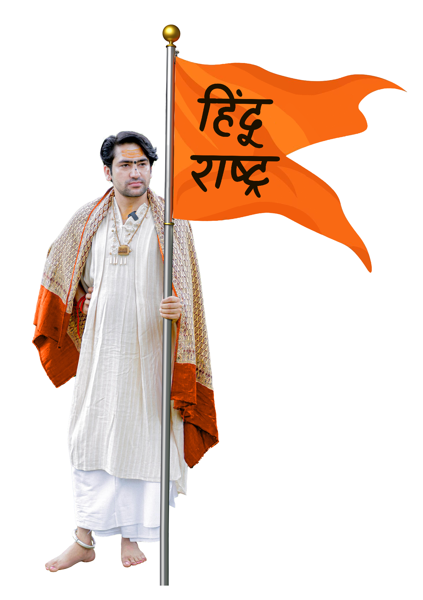

Bharat – The True Identity of India


Bharat is not merely another name for India; it is the soul, the pulse, and the original identity of our nation.
The word Bharat embodies the civilizational value system born of the Hindu way of life — a philosophy rooted in dharma (righteousness), reverence for nature, compassion for all beings, and the fearless pursuit of knowledge and truth.
For millennia, Bharat has stood as the conscience of humanity — a civilization that has guided generations through its moral clarity and spiritual depth. To recognize Bharat as the essence of India is to acknowledge that our collective character, resilience, and sense of justice spring from this timeless value system.
Ours is a country with a rich and ancient civilization, shaped by enduring traditions largely drawn from the Hindu ethos. Through centuries of change — from the age of kingdoms to the era of globalization — these values have remained the moral fabric of our nation, quietly defining what it means to be Indian.
In contemporary usage, Hinduism is often described as a religion, yet historically it represents something far wider — a way of life. Early Sanskrit literature speaks of the four purusharthas — dharma (righteous conduct), artha (purpose), kāma (fulfilment), and mokṣa (liberation) — as the foundational aims of human existence, recorded in the Upaniṣads and Manusmṛti. The term Sanātana Dharma refers not to a creed, but to an eternal ethical and spiritual order. The word “Hindu” itself emerged later, used by travellers to describe the peoples and philosophies that flourished beyond the Sindhu (Indus) river — what we now call Bharat. Thus, Hinduism in its truest sense is a civilizational continuum — a reservoir of philosophies, sciences, and cultural practices that have guided life in Bharat for thousands of years. This framework, rooted in inquiry, tolerance, and duty, continues to shape India’s moral and cultural outlook even today.
At the same time, modern India stands upon the collective sacrifices of people from every faith — Hindu, Muslim, Sikh, Jain, Buddhist, Christian, and others — who together have built this vibrant, democratic, and secular nation.
Shri Bageshwar Dham, while deeply anchored in the Hindu cultural ethos, believes equally in universal harmony and respect for all faiths, fully aligned with the values of our Constitution.

Our vision is of an India — a Bharat — that proudly preserves and promotes its civilizational heritage while ensuring every citizen lives in peace, dignity, and mutual respect.